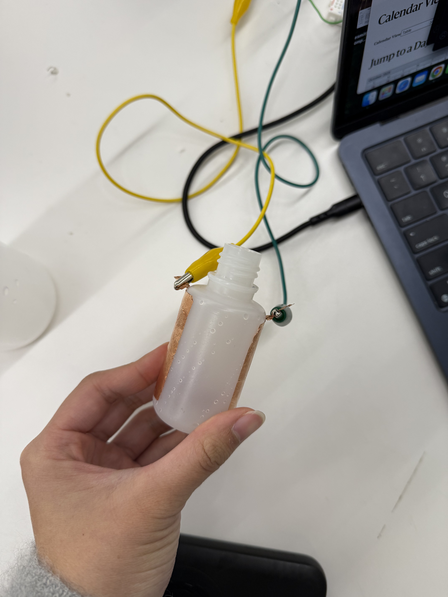
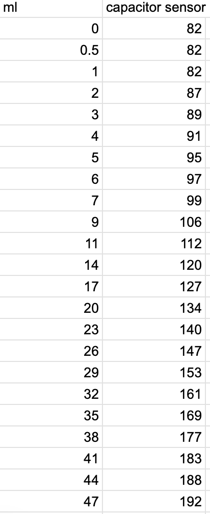
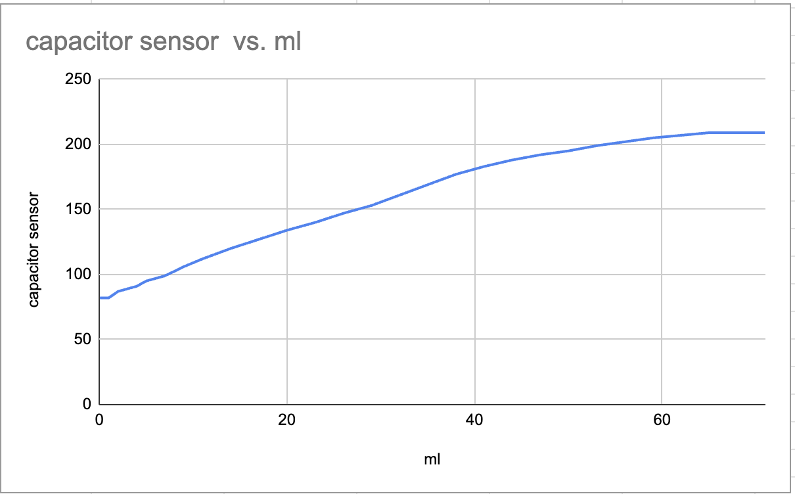
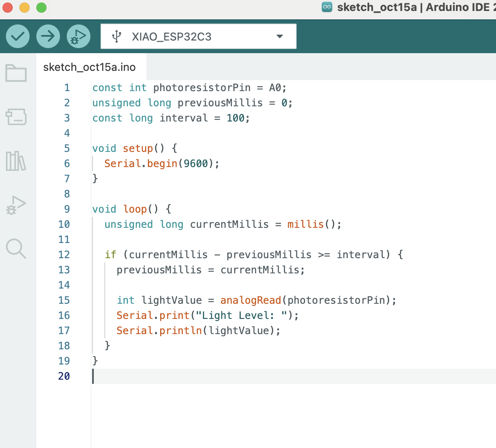
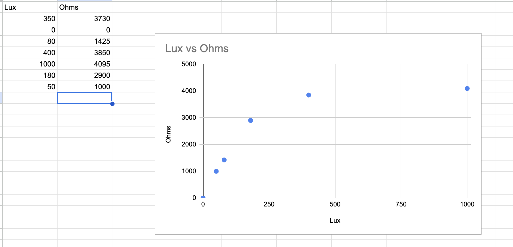

<div class="textcontainer">
<p class="margin"></p>
<h3>Week 6: Electronic Inputs</h3>
<h4>Assignment 1: Capacitive Sensor</h4>
My table group and I were able to complete this assignment during the lab session. We were assigned to build a capacitive sensor that could measure water quality,
and did this by attatching copper sheets on two sides of a plastic dropper bottle that we slowly filled with water using a pipette.
<p></p>
We collected several data points and were able to generate a non-linear graph that showed a general trend of increasing capacitance as the water level increased.
<p></p>
<p></p>
<h4>Assignment 2: Photoresistor Light Sensor</h4>
For this assignment, I created a light sensor using a photoresistor and an Arduino. The photoresistor was connected to an analog input on the Arduino, and the Arduino was programmed to read the value of the photoresistor and print it to the serial monitor
Initially, I wanted to create a heat sensor using a thermistor, but despite Tolu's help and affirmation that my wiring and code should be correct, we kept experiencing NAN readings when the thermistor was plugged in, and extremely high readings of Fahrenheight when it was removed,
which was very strange.
I ultimately removed the thermistor and replaced it with a photoresistor, which worked perfectly. Pictured below is my setup, my Arduino code, which avoided the delay() function, as well as my data and non-linear graph. I collected data by covering the photoresistor with my hand to block out light, then slowly removing my hand to allow more light to hit the sensor, as well as adding additional light with my phone flash. The data shows a general, non-linear trend of increasing light levels as the resistance decreases.
I also added an LED to the circuit that would increase/decrease in brightness depending on the amount of light the photoresistor was receiving.
<img style = "width: 65%" src="./photoresistor.png" class="about-image">
<p></p>
<p></p>
</div>